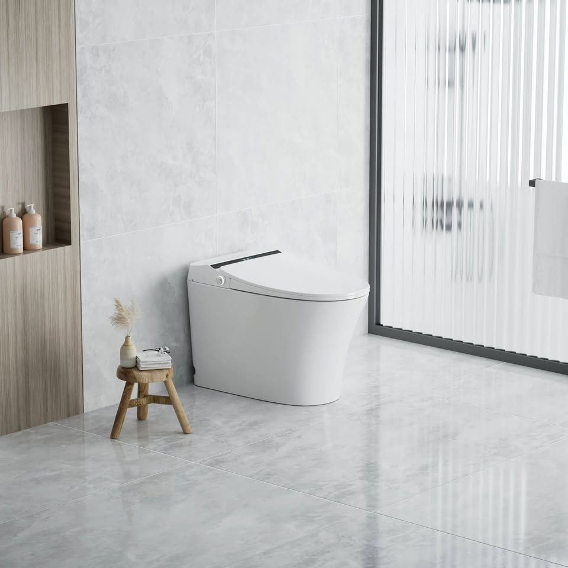
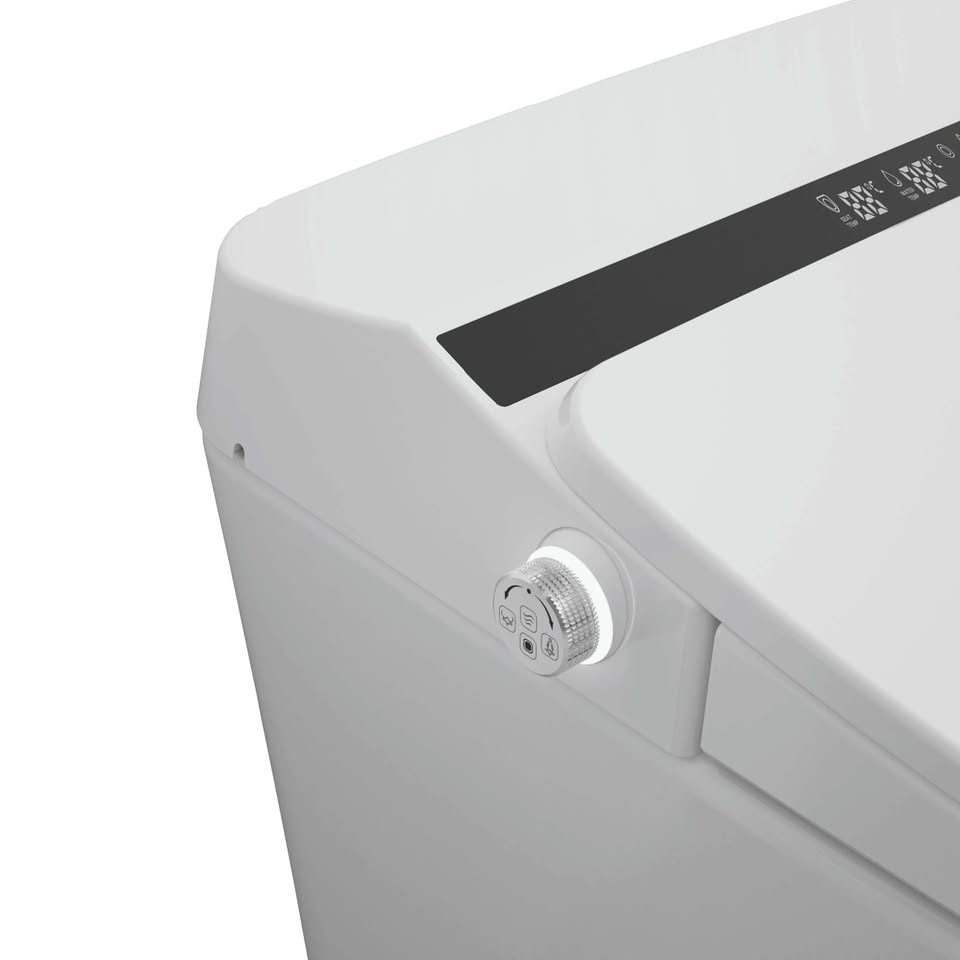

Genuine VW Touareg 7P 20" Wheels + Tyres — Set of 4
20 inch · 9J · ET57 · 5×130 · 275/45R20 · one factory set
A$980 For the set of four
Genuine VW 20 inch alloys with 275/45R20 tyres. This is one factory set — all four came off the same Touareg 7P.
Straight and true: no buckles, no flat spots, no cracks, never repaired. The cosmetic side is honest — there is kerb rash on the outer lips. It is paint rubbed off the rim edge, not structural, and the photos show the actual damage rather than hiding it.
Three of the tyres are Grenlander and one is a Scorpion (Pirelli's SUV line) — that is how the set came off the car, and the odd one out is the better tyre. Look at the close-ups: the mould hairs are still standing up on the tread shoulders, the tread block edges are still square, the fine sipes are still sharp and open, and the small round vent marks on the tread face are still proud.
- Fitment
- 20 inch · 9J · ET57 · 5×130 PCD — factory Touareg 7P
- Tyres
- 275/45R20 — three Grenlander, one Scorpion
- Condition
- Used, near new — kerb rash on outer lips, no buckles or cracks
- Weight
- Roughly 120 kg for the set — bring a ute, trailer or a mate
- Photos
- Taken 19 October 2026
Confirm the PCD and ET against your own car before you commit. 5×130 is Touareg 7P, and it also comes up on some Audi Q7 and Porsche Cayenne fitments — do your own check.
Magnetic Latching Relay 120A 12V — Bistable, Holds With Zero Coil Power
120A · 12V coil · copper busbar M6 terminals
A$25 Bulk pricing by arrangement
A real latching relay — 120A, 12V coil. It closes on a pulse, opens on a pulse, and then holds that state with the coil completely dead. That is the whole point, and it is what makes this different from every ordinary relay on the shelf.
An ordinary relay has to keep its coil energised to stay closed, around 2–5W running the entire time. At 2.5W that is 0.21A, and over a month it pulls roughly 150Ah out of a 12V battery — on a 50–70Ah car battery, flat in about two weeks. So if you use an ordinary relay to stop something draining your battery, the relay itself becomes the drain.
This one is bistable: one pulse closes it, another opens it, then the coil is off. Not low power — zero power. No coil heat, nothing to burn out, nothing drawing while the vehicle sits. It holds through a power cut too, and the state is held by a permanent magnet rather than spring tension, so rough roads and swell will not shift it.
Built for the two jobs that actually need it: 4WD dual-battery setups and boats. Also caravans and camper trailers, standby and security systems, solar, and EV or industrial high-current control circuits.
- Contact rating
- 120A
- Coil
- 12VDC, latching (bistable)
- Main terminals
- Two copper busbars with M6 threaded holes
- Coil leads
- Thin pins on the side
- Condition
- New
This is a pulse device, not a “power it to close it” relay. They come in single-coil and double-coil versions and the wiring is completely different — tell me which you need.
316 Stainless Clamp-On Rod Holder — Fits 22–32mm Rail
234mm tube · 51mm OD · toothed angle adjuster · no drilling
A$35 Brand new
316 stainless clamp-on rod holder — it clamps to your boat's rail, so there are no holes in the boat. Brand new.
The angle is set on a toothed adjuster: loosen the two M6 knurled bolts, swing it where you want it, lock it. The teeth hold the position instead of relying on friction, so it will not creep once a rod loads up. There is a black PVC liner inside the tube to protect the rod, a drain hole at the base of the liner so water does not pool, and rubber pads inside the clamp so it does not mark the rail.
Clamp-on means nothing to seal, nothing to leak, and it does not hurt your resale. Works on a vertical or horizontal rail, top or side. Photos are of the actual items.
- Rail fit
- 22–32mm diameter, clamp-on
- Tube
- 234mm long · 51mm outside diameter · polished stainless
- Adjuster
- Toothed collar held by 2 × M6 knurled bolts
- Liner
- Black PVC, with drain hole at the base
- Condition
- New
Photos are of the actual items, taken on listing day.
21700 Lithium Cells 4500mAh — 3C, 3.7V, 16.5Wh
Size 21700 · 21 × 70mm · flat top · brand new
A$6 Each — message with how many you want
New 21700 lithium-ion cells — 4500mAh, 3C, 3.7V, 16.5Wh. Unused and never charged or cycled. Size 21700, 21mm × 70mm — the big format, not 18650. Flat top.
Batch code is printed on every cell and the whole lot is the same batch, so you can check the print yourself when you come.
For building your own battery packs — e-bike, scooter, power bank, kids' ride-on; re-celling power tools, robot vacuums and cordless gear; torches and other high-drain devices that take 21700; solar and camping storage projects.
- Size
- 21700 · 21 × 70mm · flat top
- Rating
- 4500mAh · 3C · 3.7V · 16.5Wh per cell
- Condition
- New, unused, never charged or cycled
- Batch
- Batch code printed on every cell, same batch throughout
Pickup only from Gosford 2250. No postage and no courier — these are lithium cells and they are not being shipped. Cash on pickup.
21700 Lithium Cells 4000mAh — 5C, 3.7V, 14.8Wh
Size 21700 · 21 × 70mm · flat top · brand new
A$6 Each — message with how many you want
New 21700 lithium-ion cells — 4000mAh, 5C, 3.7V, 14.8Wh. Unused and never charged or cycled. Size 21700, 21mm × 70mm — the big format, not 18650. Flat top.
Batch code is printed on every cell and the whole lot is the same batch, so you can check the print yourself when you come.
For building your own battery packs — e-bike, scooter, power bank, kids' ride-on; re-celling power tools, robot vacuums and cordless gear; torches and other high-drain devices that take 21700; solar and camping storage projects.
- Size
- 21700 · 21 × 70mm · flat top
- Rating
- 4000mAh · 5C · 3.7V · 14.8Wh per cell
- Condition
- New, unused, never charged or cycled
- Batch
- Batch code printed on every cell, same batch throughout
Pickup only from Gosford 2250. No postage and no courier — these are lithium cells and they are not being shipped. Cash on pickup.
316 Marine Grade BBQ — Wander Oz, Australian Gas Certified
Model MENCA060 · LPG 13.5 MJ/h · cert GMK10674
A$450 Matching 316 rack MENCA008 available for an additional A$120
Genuine Wander Oz 316 marine BBQ. Marine grade 316 stainless, not 304, so it will not pit from salt spray.
Australian gas certified — IAPMO-R&T / Oceana GasMark, certificate GMK10674, tested and approved for Australia only. No drama at inspection or with your insurer.
Hinged hood with a window and a built-in thermometer so you can watch the cook with the lid down. Flame Guard safety shuts the gas off if the flame blows out, which matters in a sea breeze. Piezo ignition, cast iron plate and grill section, stainless drip tray and front utensil tray, folding legs for table or transom use.
Well looked after. The cast iron plate is seasoned and ready to cook on. Photos are honest — have a close look at the condition.
- Model
- Wander Oz 316 Marine · MENCA060
- Gas
- LPG · 13.5 MJ/h · burner pressure 2.75 kPa · injector 1.05mm
- Certification
- IAPMO-R&T / Oceana GasMark GMK10674 · Australia only
- Rack
- Wander Oz 316 holder MENCA008 — additional A$120
- Condition
- Used, well looked after — cast iron seasoned
Needs 500mm clearance at the back and sides, and no overhead cover.
LuxeLiving Bath i3 Smart Toilet — WaterMark, Brand New in Box
685 × 410 × 460mm · S-trap floor mounted · set-out 90–220mm
A$890 Well under the retail price of around A$3,000


LuxeLiving Bath i3 Series smart toilet / bidet. Fully WaterMark certified — a genuine Australian-certified unit, not a grey import. Brand new in box, never installed and never used.
Certification: WaterMark (AS 1172.1 / AS 1172.2 plumbing, AS/NZS 60335.1 / 60335.2.84 electrical, RCM marked). AC220–240V 50Hz — standard Australian power. IPX4 waterproof rating.
This is the manufacturer's top-tier unit. On top of auto lid, bidet and dryer it adds a microwave presence sensor so the lid and seat open as you walk up, foot-induction flush, power-off flush on a 9V battery during a blackout, activated carbon auto-deodorisation, cold and hot SPA wash, an induction night light, antibacterial seat and nozzle with nozzle self-clean, one-touch wash/flush/dry, and moving or massage cleanse.
Specifications: 685 × 410 × 460mm (L × W × H), S-trap floor mounted, rough-in 90–220mm adjustable, dual flush 6/3L, 1300W, instant warm water with no tank, water pressure 0.15MPa dynamic / 0.5MPa static, flow 20L/min or more. Four-level adjustable heated seat, water temperature and warm air dryer; rear wash, front wash (Lady Care); auto open and close; LED night light; remote control with wall-mount holder; earth-leakage protection and over-pressure protection.
Included: ceramic smart toilet, remote control, wall mount, remote manual, 2× AAA batteries, 9V battery box, G1/2 to G3/4 angle valve, water hose, flow restrictor, flange, 2× remote expansion nuts, 2× remote screws, user manual.
- Model
- LuxeLiving Bath i3 Series
- Certification
- WaterMark (AS 1172.1 / 1172.2, AS/NZS 60335.1 / 60335.2.84) · RCM marked
- Size
- 685 × 410 × 460mm · S-trap floor mounted · set-out 90–220mm
- Flush & power
- Dual flush 6/3L · AC220–240V 50Hz · 1300W · IPX4
- Condition
- Brand new in box, never installed
Check your existing set-out (wall to waste centre) — this unit fits 90–220mm. Mains drinking water only: not suitable for gravity-fed, rainwater, greywater or bore water. Sold as a private clearance, so the manufacturer's warranty is not transferable — please inspect before purchase. Heavy ceramic unit: bring a helper and a trolley or ute. Product images are the manufacturer's; photos of the actual boxed unit are on the Facebook listing.